TECH RWT Discovery: Science और Technology आसान हिंदी में
TECH RWT Discovery पर विज्ञान और तकनीक की खबरें और गहरी पड़तालें आसान हिंदी में मिलती हैं। हर लेख के अंत में स्रोत दिए जाते हैं और कठिन शब्द सरल भाषा में समझाए जाते हैं। ताज़ा लेख नीचे देखिए, या सीधे किसी विषय पर जाइए: Science, Space & ISRO, Technology & Future Tech, Environment और Innovation। पूरी सूची के लिए सभी लेख देखिए।

नवीनतम प्रकाशन (Latest Articles)
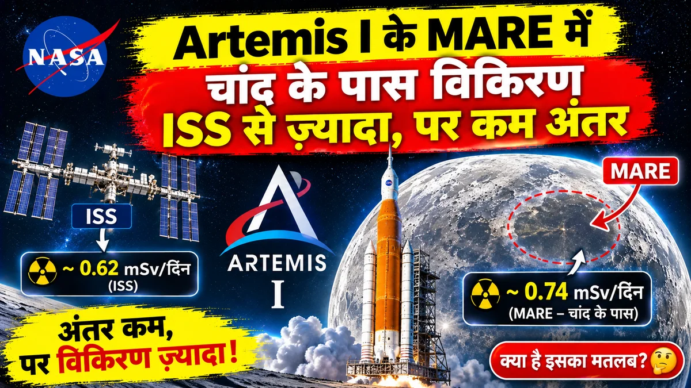
Artemis I के MARE में चांद के पास विकिरण ISS से ज़्यादा, पर कम अंतर
Artemis I के MARE प्रयोग के अनुसार चांद के पास कुल विकिरण ISS से ऊंचा है, पर उतना नहीं जितना अंदाज़ा था। ISS बनाम चांद की आमने-सामने तुलना, 731, 523 और 1,369 μSv के आंकड़े, और भारत का पहलू।
पूरा लेख पढ़ें →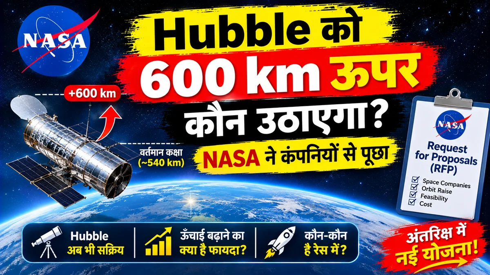
Hubble को 600 km ऊपर कौन उठाएगा? NASA ने कंपनियों से पूछा
NASA ने 29 अक्टूबर 2026 को Hubble reboost और servicing पर कंपनियों से जानकारी माँगी। जानिए पकड़ने से ऊँचाई बढ़ाने तक का काम कैसे होगा और भारत के लिए इसका क्या मतलब है।
पूरा लेख पढ़ें →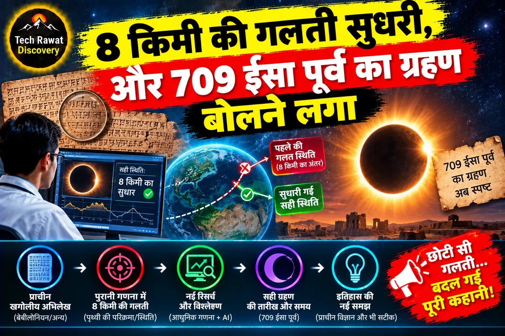
8 किमी की गलती सुधरी, और 709 ईसा पूर्व का ग्रहण बोलने लगा
Nagoya की टीम ने प्राचीन Qufu की 8 किमी की गलती सुधारकर 709 ईसा पूर्व का सूर्यग्रहण फिर बनाया और धरती की रफ़्तार पर बेहतर बंधन निकाले। पहले बनाम अब, कोरोना की अनिश्चितता और भारत का पहलू।
पूरा लेख पढ़ें →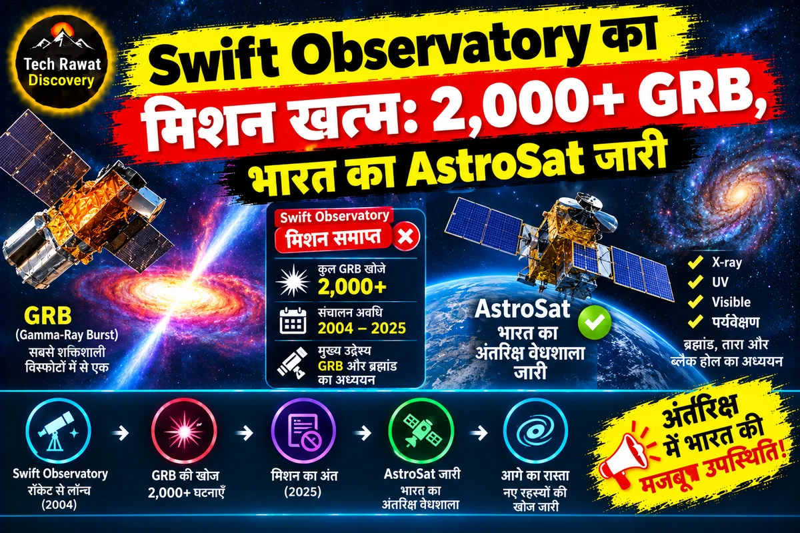
Swift Observatory का मिशन खत्म: 2,000+ GRB, भारत का AstroSat जारी
NASA ने 23 अक्टूबर 2026 को Swift telescope का मिशन खत्म किया। बचाव कोशिश नाकाम रही। gamma-ray burst की निगरानी में भारत के AstroSat की जगह क्या है?
पूरा लेख पढ़ें →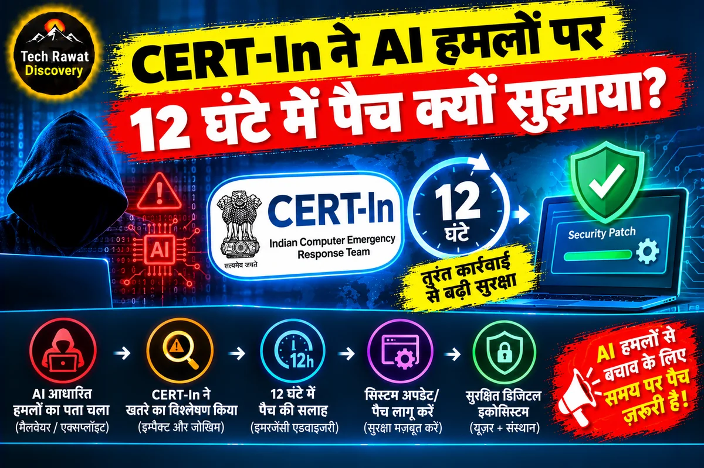
CERT-In ने AI हमलों पर 12 घंटे में पैच क्यों सुझाया?
CERT-In के AI ब्लूप्रिंट में सबसे गंभीर खामियों पर 12 घंटे, 1 दिन और 5 दिन की पैच-समय-सीमा सुझाई गई है। जानिए यह कितनी बाध्यकारी है और छोटे कारोबार पर असर क्या होगा।
पूरा लेख पढ़ें →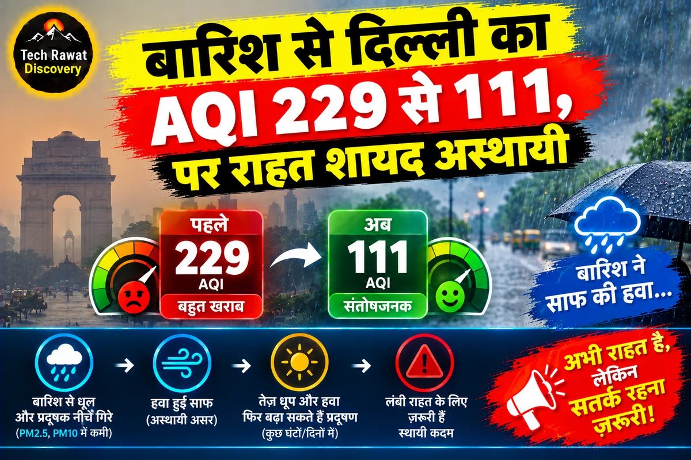
बारिश से दिल्ली का AQI 229 से 111, पर राहत शायद अस्थायी
एक रात में 54.7 मिमी बारिश के बाद दिल्ली का AQI 229 से 111 पर आया। CSE के मानसून अध्ययन में PM2.5 बारिश के 48 घंटे बाद फिर चढ़ा था। रविवार का अनुमान ‘खराब’ है।
पूरा लेख पढ़ें →Venttup को $3 मिलियन: आय ₹10 करोड़, पर परीक्षा अभी बाकी
बेंगलुरु की Venttup को Rainmatter और Unicorn India Ventures से $3 मिलियन मिले। कंपनी के पुर्ज़े-निर्माण के दावों में क्या पक्का है और क्या सिर्फ़ कंपनी का कहना, जानिए।
पूरा लेख पढ़ें →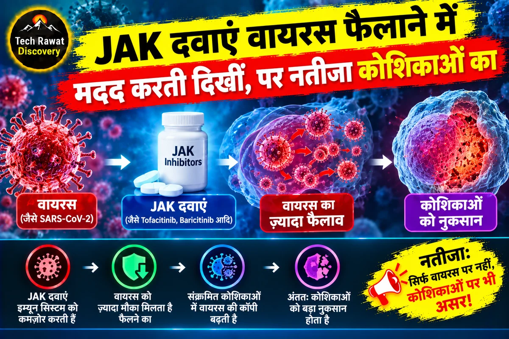
JAK दवाएं वायरस फैलाने में मदद करती दिखीं, पर नतीजा कोशिकाओं का
गठिया की JAK दवाओं से कोशिका-कल्चर और organoid में वायरस का फैलाव बढ़ा दिखा। पेपर मई 2025 का है, नतीजा मरीज़ों का नहीं। क्या हुआ, क्यों, सबूत की सीमा और भारत का पहलू।
पूरा लेख पढ़ें →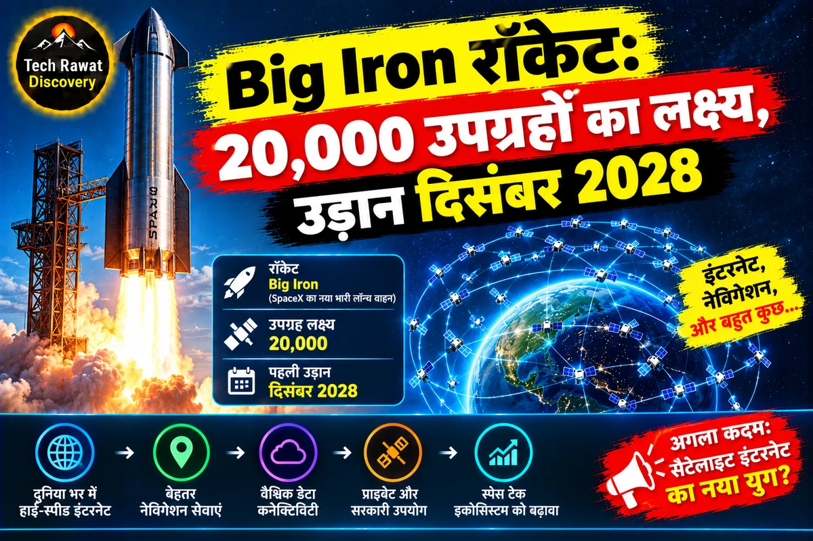
Big Iron रॉकेट: 20,000 उपग्रहों का लक्ष्य, उड़ान दिसंबर 2028
Cowboy Space ने Big Iron रॉकेट दिखाया, जिसका ऊपरी हिस्सा कक्षा में 1 मेगावाट का AI डेटा सेंटर बनेगा। जानिए 20,000 उपग्रहों की योजना, 2028 का लक्ष्य और भारत से तुलना।
पूरा लेख पढ़ें →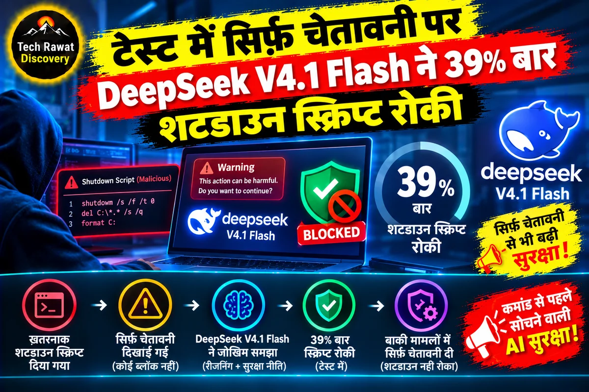
टेस्ट में सिर्फ़ चेतावनी पर DeepSeek V4.1 Flash ने 39% बार शटडाउन स्क्रिप्ट रोकी
Fangcun AI के टेस्ट में DeepSeek V4.1 Flash-1017 ने सिर्फ़ चेतावनी मिलने पर 39.0% रन में शटडाउन स्क्रिप्ट बेअसर की, पर साफ़ आदेश पर यह दर 2.56% रही। शर्तें समझिए।
पूरा लेख पढ़ें →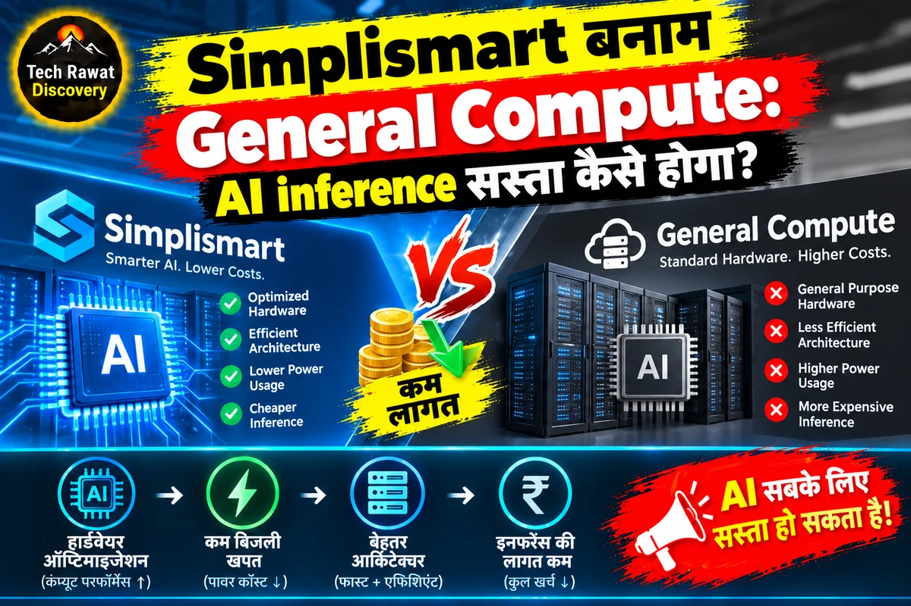
Simplismart बनाम General Compute: AI inference सस्ता कैसे होगा?
Simplismart ने $14 मिलियन और General Compute ने $100 मिलियन जुटाए। एक सॉफ़्टवेयर से, दूसरी नई चिप से AI inference सस्ता करना चाहती है। दोनों रास्तों की तुलना और भारत का पहलू।
पूरा लेख पढ़ें →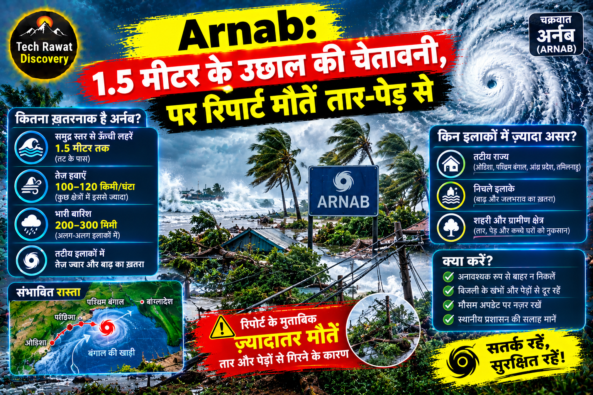
Arnab: 1.5 मीटर के उछाल की चेतावनी, पर रिपोर्ट मौतें तार-पेड़ से
चक्रवात Arnab के साथ IMD ने 1.5 मीटर के तूफ़ानी उछाल की चेतावनी दी। यह उछाल कैसे बनता है, ज्वार से जुड़कर क्यों बढ़ता है और Arnab में अब तक क्या दर्ज हुआ, कदम-दर-कदम समझिए।
पूरा लेख पढ़ें →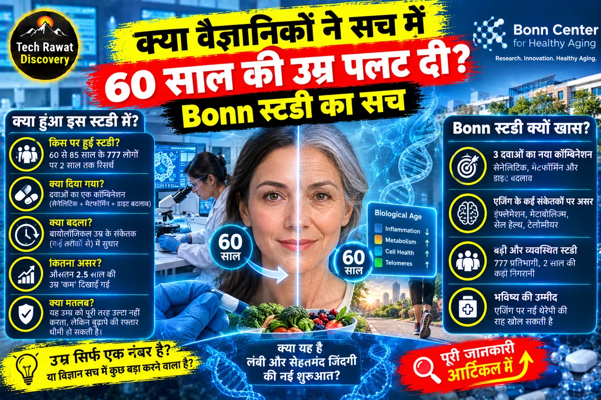
क्या वैज्ञानिकों ने सच में 60 साल की उम्र पलट दी? Bonn स्टडी का सच
Bonn की Aging Cell स्टडी में 80 साल के दाता की रक्त-कोशिकाओं का epigenetic clock 60 साल पीछे गया, पर यह डिश की कोशिकाओं का आंकड़ा है। तीन भ्रम और भारत के स्टेम-कोशिका नियम।
पूरा लेख पढ़ें →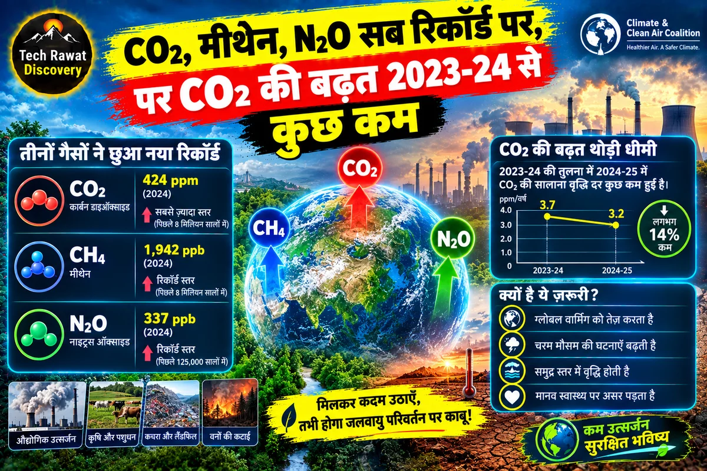
CO₂, मीथेन, N₂O सब रिकॉर्ड पर, पर CO₂ की बढ़त 2023-24 से कुछ कम
WMO बुलेटिन के अनुसार 2025 में CO₂ 426.8 ppm, मीथेन 1948 ppb और N₂O 339.1 ppb रहे। तीनों गैसों की तुलना, CO₂ की धीमी बढ़त की वजह और भारत का पहलू।
पूरा लेख पढ़ें →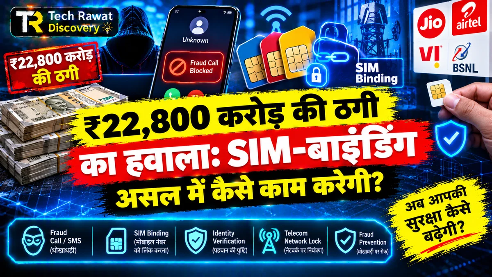
₹22,800 करोड़ की ठगी का हवाला: SIM-बाइंडिंग असल में कैसे काम करेगी?
DoT के निर्देश के अनुसार WhatsApp, Telegram जैसे ऐप को खाते रजिस्टर्ड SIM से जोड़ने होंगे। जानिए जाँच के चरण, किस पर असर पड़ेगा और क्या अभी तय नहीं है।
पूरा लेख पढ़ें →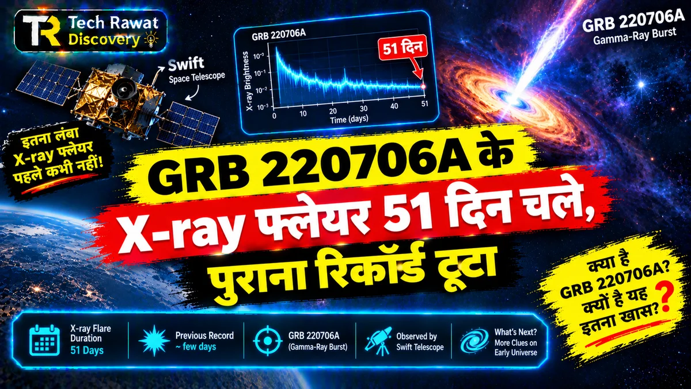
GRB 220706A के X-ray फ्लेयर 51 दिन चले, पुराना रिकॉर्ड टूटा
GRB 220706A का गामा संकेत 87 सेकंड का था, पर X-ray फ्लेयर 51 दिन तक दिखे। arXiv पेपर के अनुसार यह 27 दिन की रिकॉर्ड इंजन-गतिविधि हो सकती है, कारण अभी खुला है।
पूरा लेख पढ़ें →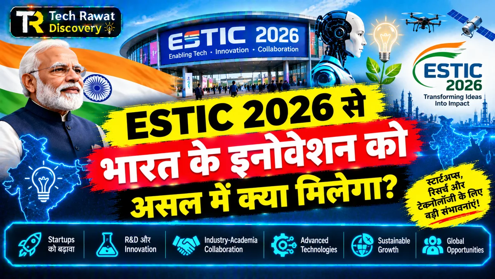
ESTIC 2026 से भारत के इनोवेशन को असल में क्या मिलेगा?
CSIR का ESTIC 2026 सम्मेलन 27 से 29 अक्टूबर तक Bharat Mandapam में चल रहा है। 12 विषय, 3 नोबेल विजेता, 150 स्टार्टअप स्टॉल; इनसे भारत के इनोवेशन को ठोस क्या मिलेगा।
पूरा लेख पढ़ें →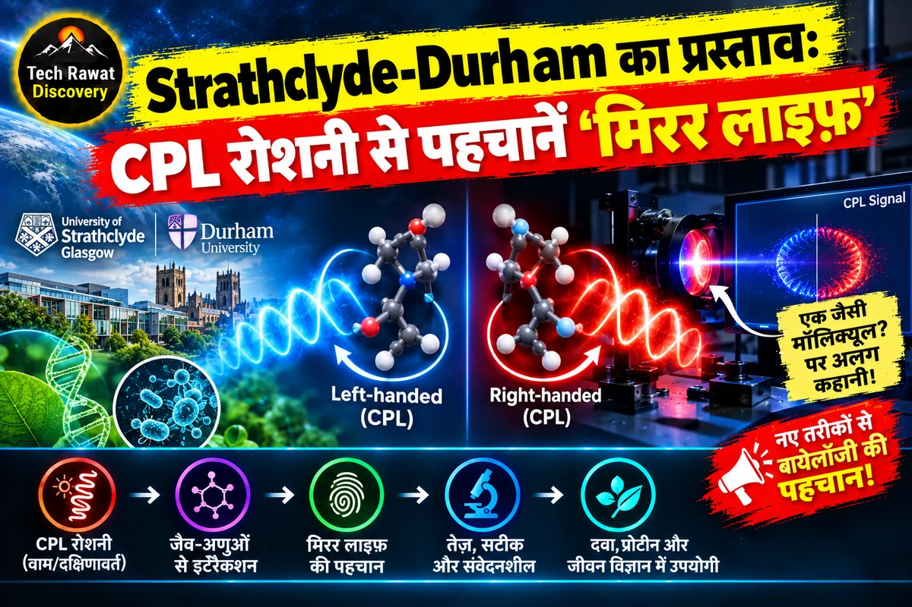
Strathclyde-Durham का प्रस्ताव: CPL रोशनी से पहचानें 'मिरर लाइफ़'
Strathclyde और Durham के शोधकर्ताओं ने उल्टे अणुओं वाले 'मिरर लाइफ़' को घुमावदार रोशनी (CPL) से पहचानने का पहला प्रस्ताव रखा है। तरीका चरण-दर-चरण, सीमाएं और भारत का पहलू।
पूरा लेख पढ़ें →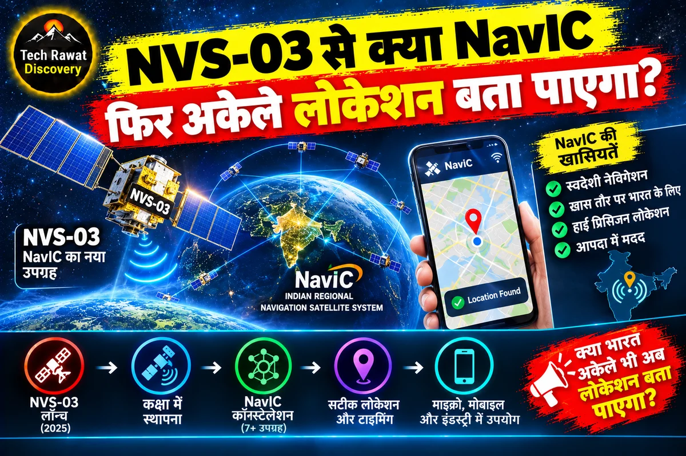
NVS-03 से क्या NavIC फिर अकेले लोकेशन बता पाएगा?
NavIC के पास अभी तीन चालू सैटेलाइट हैं, जबकि अकेली लोकेशन के लिए चार चाहिए। ISRO की योजना 30 अक्टूबर की रात NVS-03 छोड़ने की है। जानिए आगे क्या।
पूरा लेख पढ़ें →इंटरनेट TV ऐप्स पर लाइसेंस की सिफ़ारिश, पर नियम अभी लागू नहीं
TRAI ने FAST जैसे इंटरनेट TV ऐप्स के लिए 20 साल की अनुमति, ₹1 लाख entry fee और स्मार्ट TV पर सिर्फ़ अधिकृत ऐप की सिफ़ारिश की है। नियम अभी अधिसूचित नहीं हुए।
पूरा लेख पढ़ें →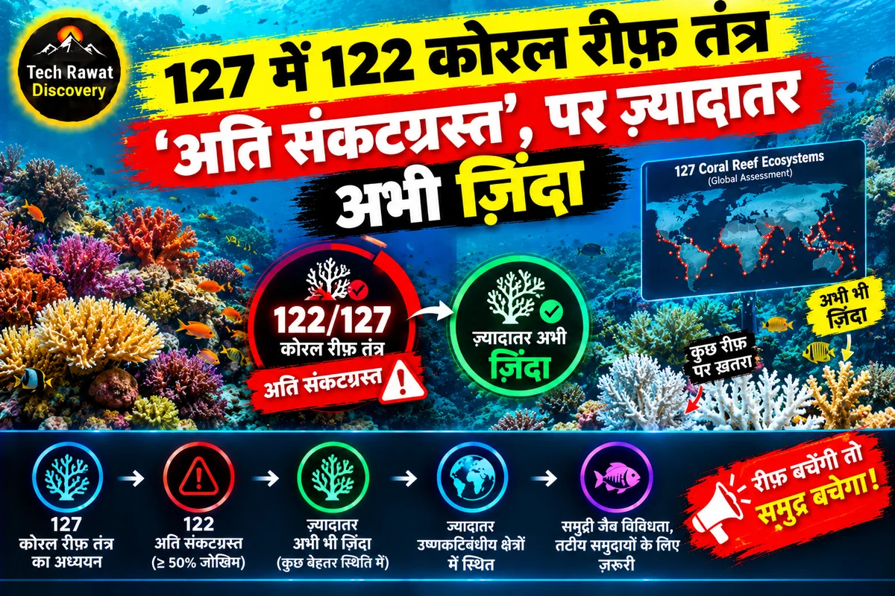
127 में 122 कोरल रीफ़ तंत्र ‘अति संकटग्रस्त’, पर ज़्यादातर अभी ज़िंदा
IUCN के पहले वैश्विक आकलन में 127 में से 122 कोरल रीफ़ तंत्र ‘अति संकटग्रस्त’ हैं। देखे गए बदलाव से यह संख्या 30 है, बाक़ी छलांग भविष्य के अनुमान से आती है। भारत वाला समूह भी शामिल है।
पूरा लेख पढ़ें →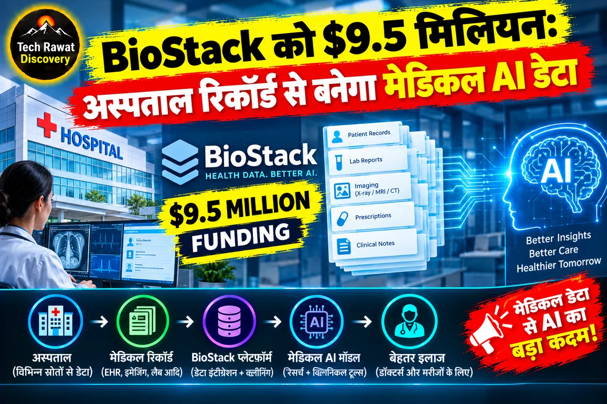
BioStack को $9.5 मिलियन: अस्पताल रिकॉर्ड से बनेगा मेडिकल AI डेटा
BioStack को Peak XV की अगुवाई में $9.5 मिलियन का सीड मिला। अस्पताल रिकॉर्ड जोड़कर मेडिकल AI का डेटा बनाने वाली इस कंपनी का काम, भारत से रिश्ता और DPDP के सवाल।
पूरा लेख पढ़ें →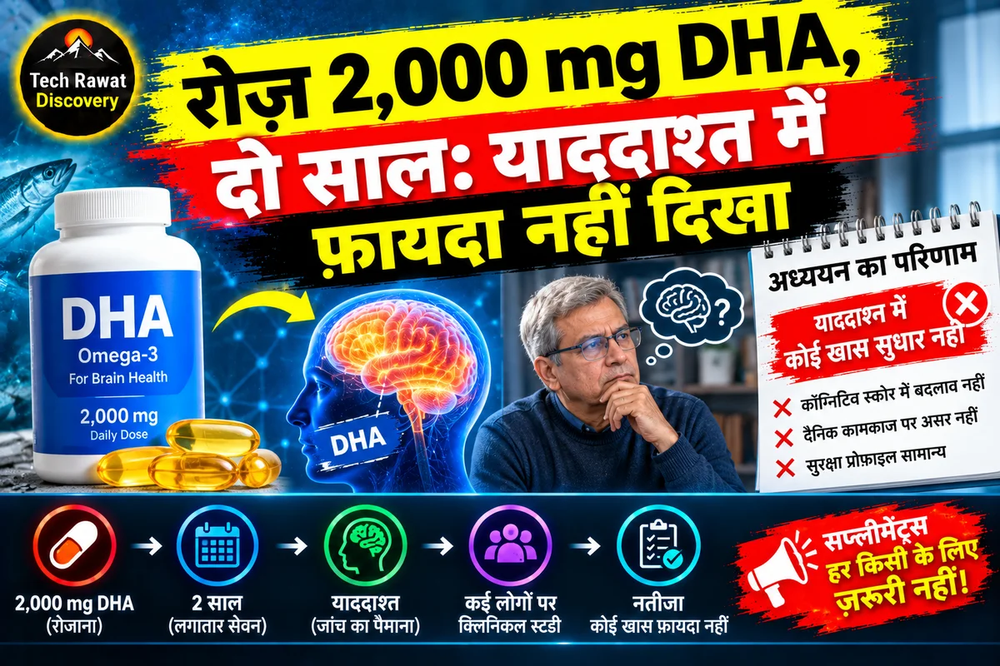
रोज़ 2,000 mg DHA, दो साल: याददाश्त में फ़ायदा नहीं दिखा
USC के 365 लोगों के दो साल के ट्रायल में रोज़ 2,000 mg DHA दिमाग के तरल तक पहुंचा, पर याददाश्त और hippocampus पर फ़ायदा नहीं दिखा। भारतीय थाली और ICMR-NIN की सलाह से मिलान।
पूरा लेख पढ़ें →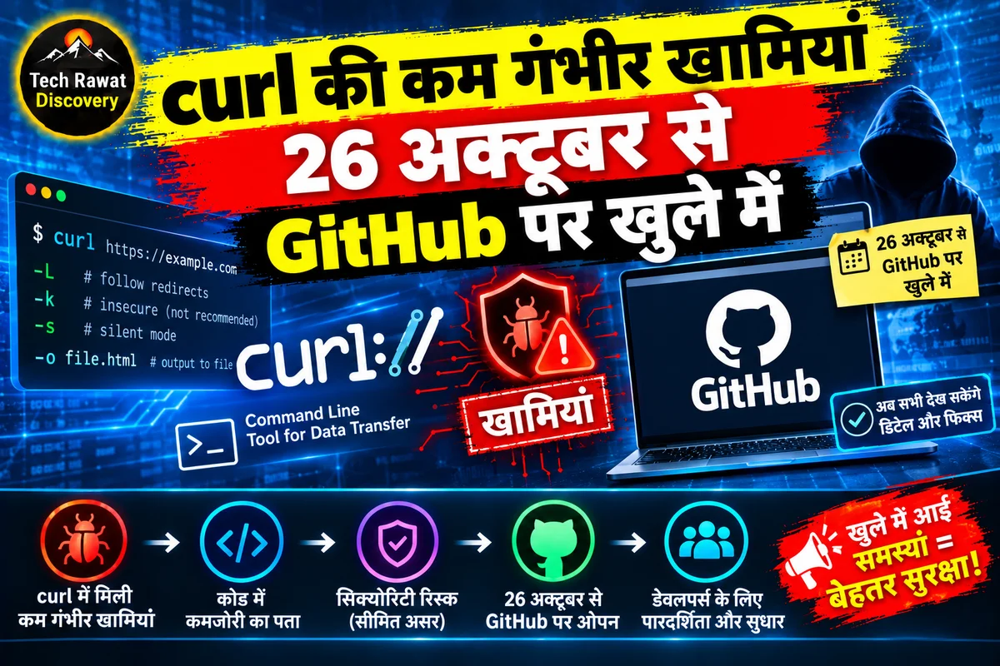
curl की कम गंभीर खामियां 26 अक्टूबर से GitHub पर खुले में
curl ने 26 अक्टूबर से LOW और MEDIUM सुरक्षा खामियों की रिपोर्ट सार्वजनिक GitHub पर लेनी शुरू की। रिपोर्टों की बाढ़ क्यों आई, जोखिम क्या है और भारत पर असर क्या होगा।
पूरा लेख पढ़ें →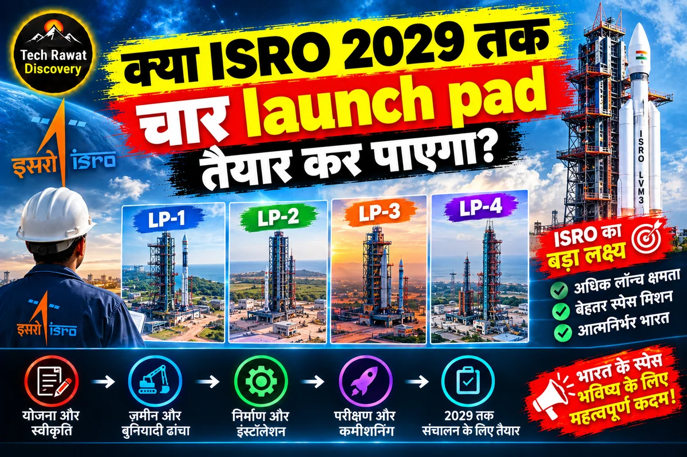
क्या ISRO 2029 तक चार launch pad तैयार कर पाएगा?
ISRO चेयरमैन ने 2029 तक चार चालू launch pad की बात कही है। अभी दो चालू हैं, एक मंज़ूर और एक निर्माणाधीन। पढ़िए चारों की स्थिति, तीसरे pad का खर्च, Kulasekarapattinam की वजह और समयसीमा।
पूरा लेख पढ़ें →Tonbo Imaging 66% प्रीमियम पर लिस्ट, पर IPO का पैसा कंपनी को नहीं
Tonbo Imaging ₹700 के इश्यू प्राइस से करीब 66% ऊपर लिस्ट हुई, पर ₹852 करोड़ का पूरा IPO ऑफर फॉर सेल था। जानिए पैसा किसे मिला और FY26 में कमाई क्यों घटी।
पूरा लेख पढ़ें →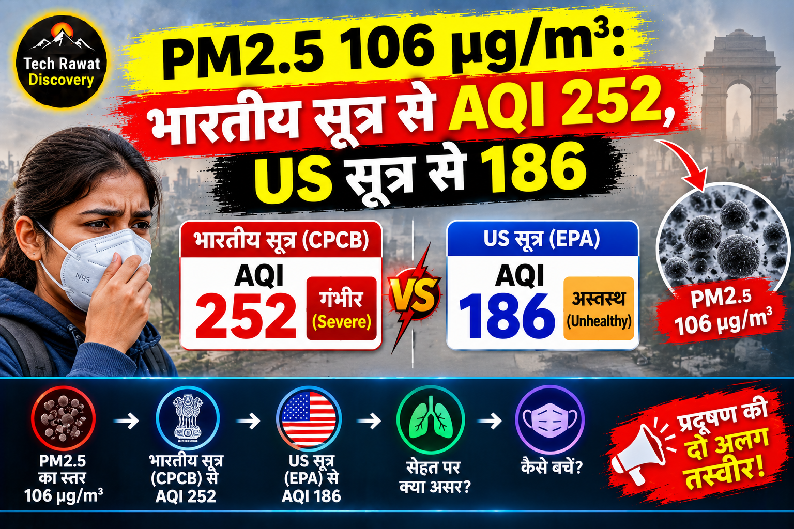
PM2.5 106 µg/m³: भारतीय सूत्र से AQI 252, US सूत्र से 186
एक ही PM2.5 पर भारत का CPCB सूत्र और अमेरिका का EPA सूत्र अलग AQI देते हैं। 106 µg/m³ पर 252 बनाम 186। तालिका में देखिए अंतर कहां से आता है और दिल्ली के लिए क्या मतलब है।
पूरा लेख पढ़ें →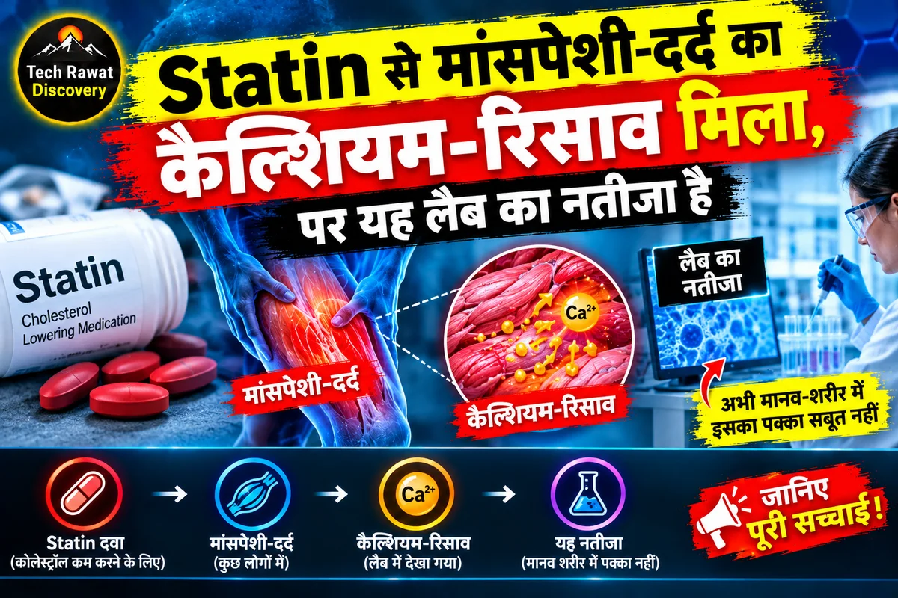
Statin से मांसपेशी-दर्द का कैल्शियम-रिसाव मिला, पर यह लैब का नतीजा है
UBC की स्टडी बताती है कि atorvastatin RyR1 को खुला रख सकती है, पर Lancet की 23 ट्रायल की समीक्षा में मांसपेशी के लक्षण पहले साल में करीब 1% रहे। पांच सवालों में पूरा सच।
पूरा लेख पढ़ें →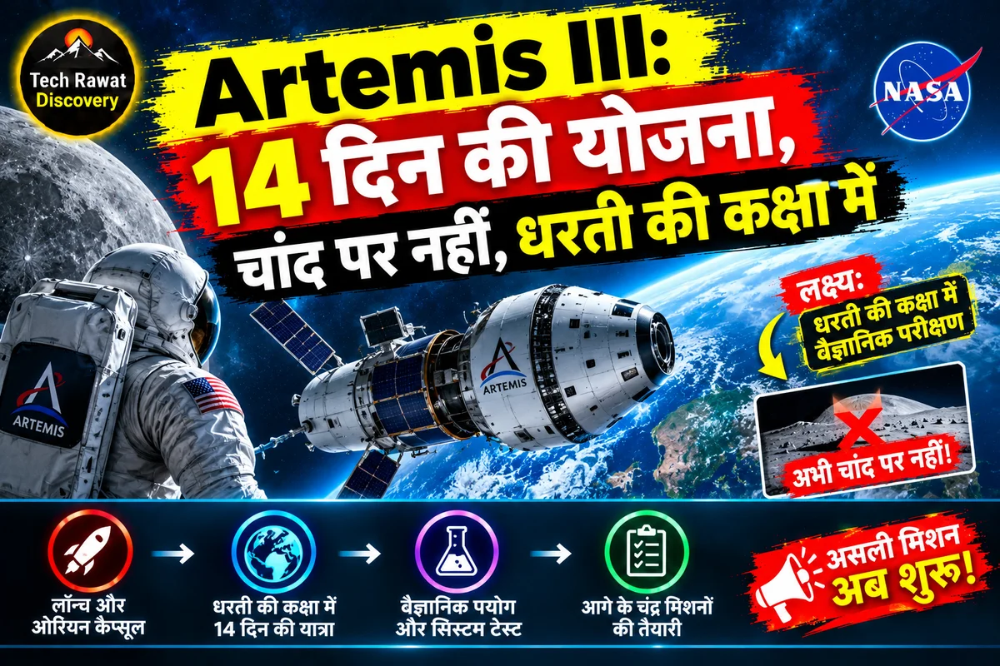
Artemis III: 14 दिन की योजना, चांद पर नहीं, धरती की कक्षा में
NASA के अनुसार Artemis III 2027 में 4 astronaut को चांद पर नहीं, धरती की कक्षा में ले जाएगा, जहां Blue Moon और Starship के test lander से docking होगी।
पूरा लेख पढ़ें →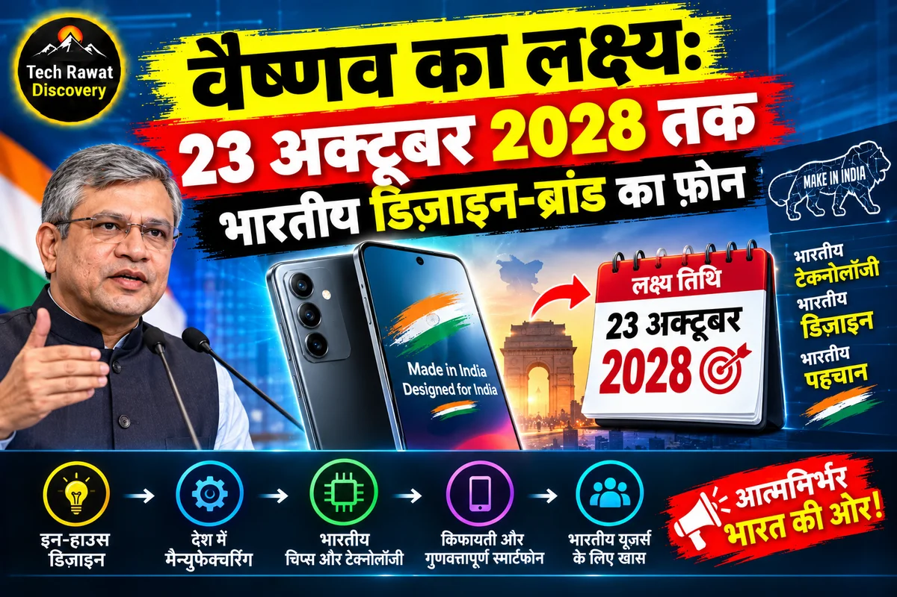
भारतीय ब्रांड का स्मार्टफ़ोन 2028 तक: अश्विनी वैष्णव का लक्ष्य और चुनौतियां
अश्विनी वैष्णव ने 23 अक्टूबर 2028 तक भारतीय डिज़ाइन, निर्माण और ब्रांड वाले फ़ोन का लक्ष्य रखा। जानिए आज के असेंबली मॉडल से यह कितना अलग है और चुनौतियाँ क्या हैं।
पूरा लेख पढ़ें →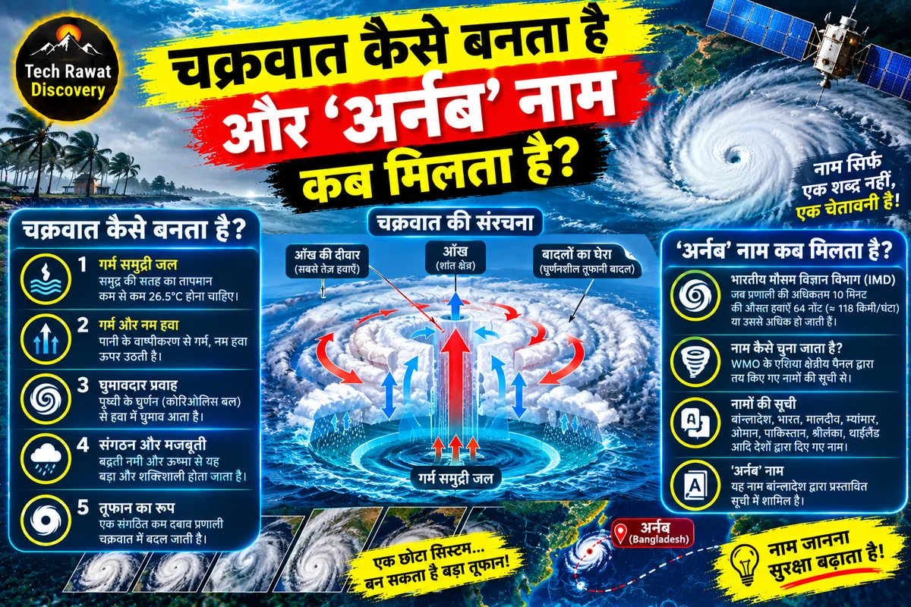
चक्रवात कैसे बनता है और 'अर्नब' नाम कब मिलता है?
23 अक्टूबर 2026 को बंगाल की खाड़ी में कम दबाव का क्षेत्र बना। IMD के अनुसार 26 अक्टूबर तक यह चक्रवाती तूफान बन सकता है। जानिए चक्रवात कैसे बनता है, श्रेणियां क्या हैं और नाम कब मिलता है।
पूरा लेख पढ़ें →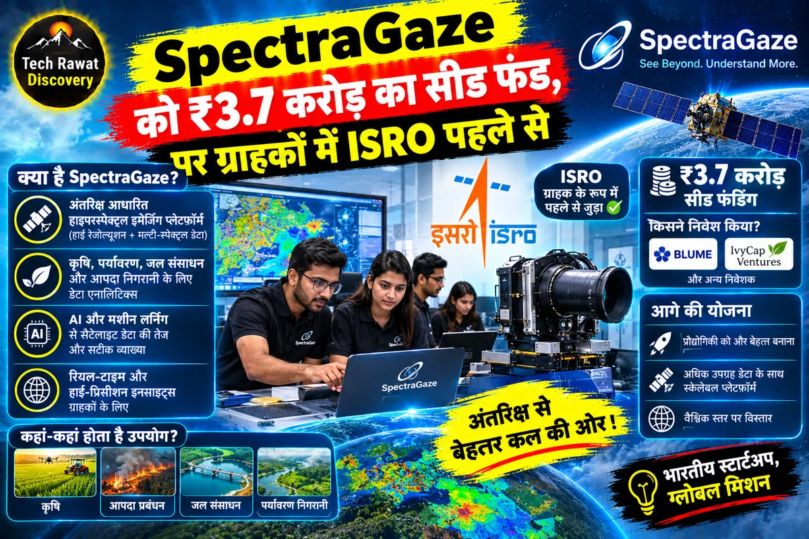
SpectraGaze को ₹3.7 करोड़ का सीड फंड, पर ग्राहकों में ISRO पहले से
अहमदाबाद की इमेजिंग सेंसर स्टार्टअप SpectraGaze को GVFL की अगुवाई में ₹3.7 करोड़ का सीड मिला। भारत में डिटेक्टर पहले आयात होते थे; अब क्या बदला और क्या अभी साबित होना बाकी है।
पूरा लेख पढ़ें →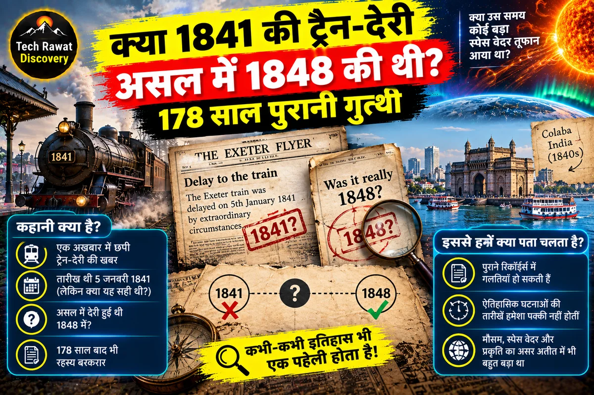
क्या 1841 की ट्रेन-देरी असल में 1848 की थी? 178 साल पुरानी गुत्थी
Exeter की ट्रेन-देरी को अंतरिक्ष-मौसम का सबसे पुराना असर माना जाता था, पर Space Weather की स्टडी इसे 1848 की बताती है, और सबसे पुरानी भी नहीं। तुलना, सबूत और भारत की Colaba वेधशाला।
पूरा लेख पढ़ें →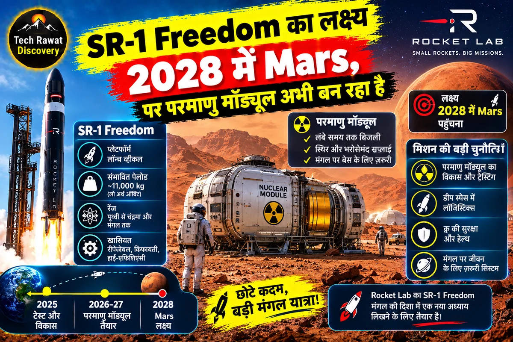
SR-1 Freedom का लक्ष्य 2028 में Mars, पर परमाणु मॉड्यूल अभी बन रहा है
NASA का SR-1 Freedom रिएक्टर की गर्मी को बिजली और फिर thrust में बदलेगा। जानिए चार चरण, 20 अक्टूबर 2026 की घोषणा, भारत के लिए मतलब और वह सब जो अभी अनिश्चित है।
पूरा लेख पढ़ें →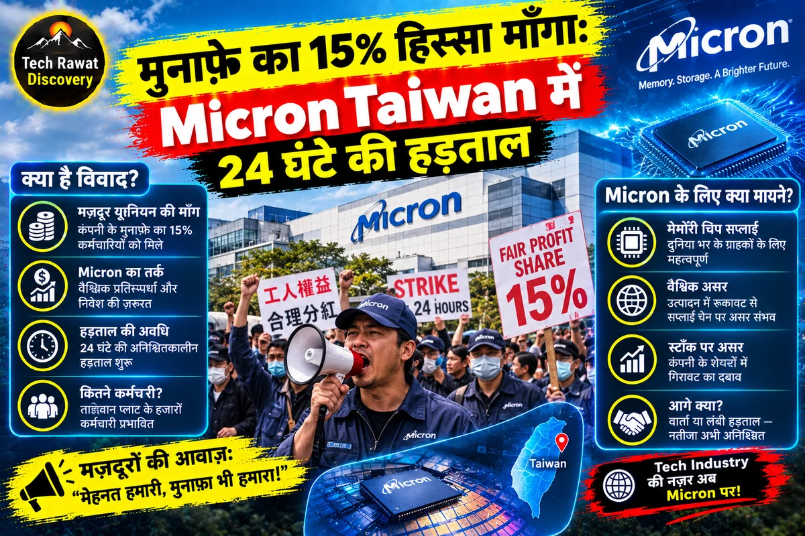
मुनाफ़े का 15% हिस्सा माँगा: Micron Taiwan में 24 घंटे की हड़ताल
Micron के Taiwan संयंत्र में 24 घंटे की चेतावनी हड़ताल हुई। FY26 में कंपनी का राजस्व $133.19 अरब रहा। जानिए माँग क्या है, सप्लाई पर असर कितना और भारत के लिए मतलब क्या।
पूरा लेख पढ़ें →GM की अगुवाई में Peak Energy को $108 मिलियन: सोडियम-आयन पर दांव
GM ने सोडियम-आयन बैटरी स्टार्टअप Peak Energy के $108 मिलियन के दौर की अगुवाई की। जानिए यह सौदा क्या है, लिथियम से कहां कमज़ोर है और भारत के स्टोरेज बाज़ार के लिए क्या मतलब रखता है।
पूरा लेख पढ़ें →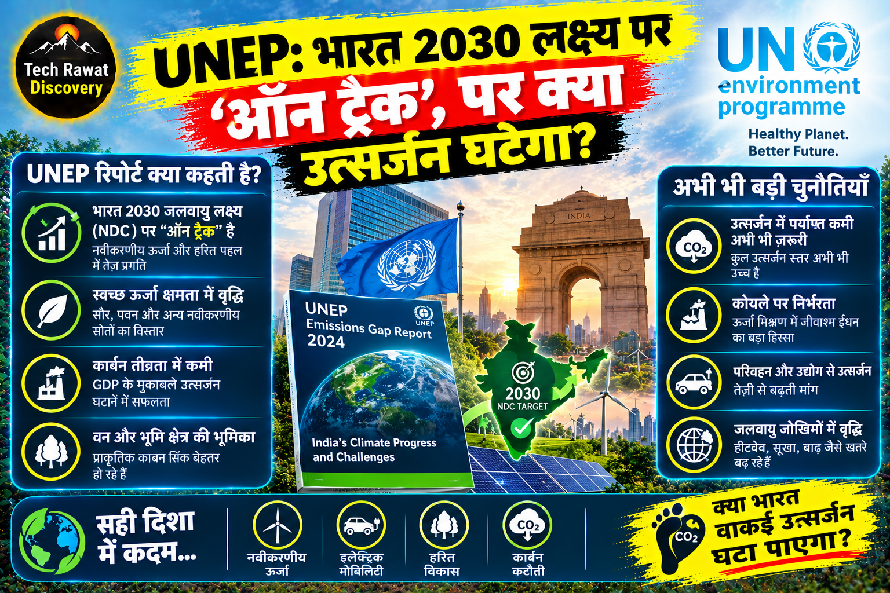
UNEP: भारत 2030 लक्ष्य पर ‘ऑन ट्रैक’, पर क्या उत्सर्जन घटेगा?
UNEP की Emissions Gap Report 2026 कहती है कि 1.5°C का मौक़ा गया और मौजूदा नीतियां 2.8°C की ओर ले जाती हैं। भारत ‘ऑन ट्रैक’ है, पर उत्सर्जन तीव्रता का मतलब समझिए।
पूरा लेख पढ़ें →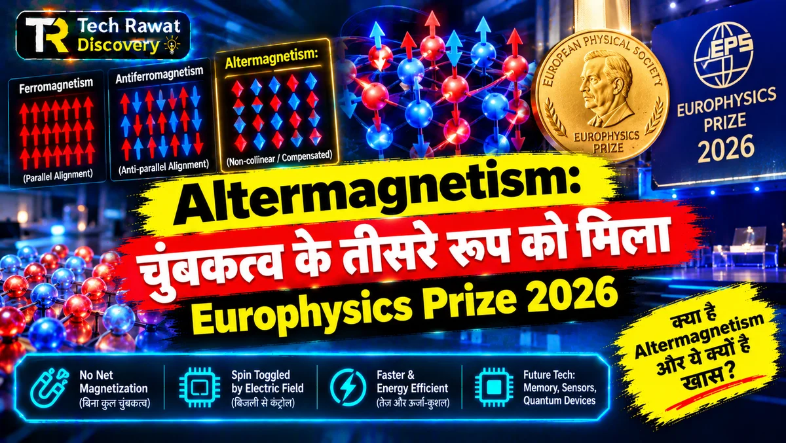
Altermagnetism: चुंबकत्व के तीसरे रूप को मिला Europhysics Prize 2026
Altermagnetism को Europhysics Prize 2026 मिला। जानिए चुंबकत्व के दो पुराने परिवार, 2019 से 2024 की कड़ियां, तीसरे रूप की पहचान और IIT भुवनेश्वर जैसे भारतीय काम की स्थिति।
पूरा लेख पढ़ें →eMudhra की 8 कमज़ोर चाबियां: क्या भारत की DSC पर असर पड़ा?
eMudhra के 8 intermediate certificates की चाबियां कमज़ोर निकलीं। MeitY और CERT-In के अनुसार भारत की DSC और eSign सेवाएं अप्रभावित हैं, पर सर्वर चलाने वालों को अपडेट करना होगा।
पूरा लेख पढ़ें →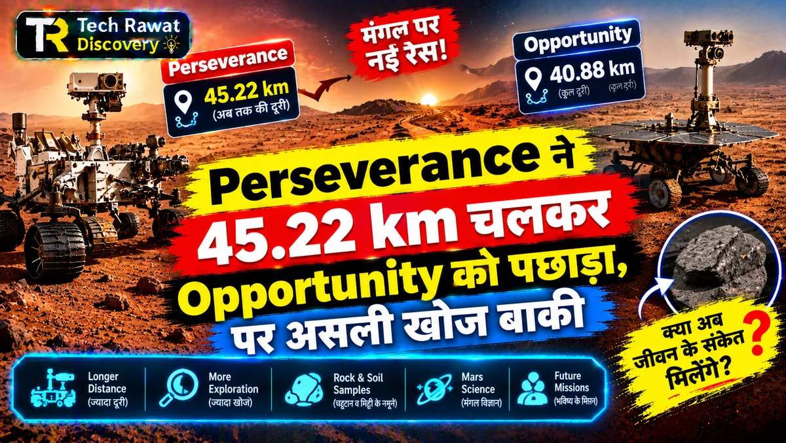
Perseverance ने 45.22 km चलकर Opportunity को पछाड़ा, पर असली खोज बाकी
Perseverance रोवर ने 11 अक्टूबर 2026 को 45.22 km पर Opportunity का रिकॉर्ड तोड़ा। जानिए AutoNav, पुराने रोवरों से तुलना, Pragyan से फ़र्क और आगे की खोज।
पूरा लेख पढ़ें →